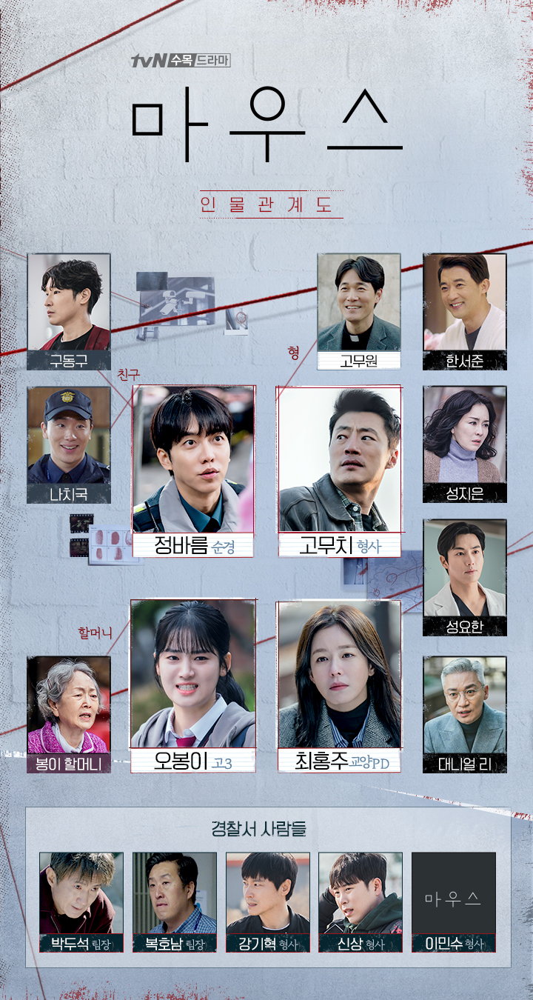

김수현의 취미 드라마시청
요즘 즐겨보는 드라마
마우스
마우스 공식 홈페이지방영시간 매주 수,목 밤10시 30분 방송 tvn
마우스란?기획의도싸이코패스는 만들어지는 게 아니라 태어나는 것이다. 타인의 고통을 전혀 느끼지 못하는 이기적인 존재로부터 오는 깊은 분노
등장인물 여기를 클릭하세요.
마우스 인물관계도
다들 사연보따리 한아름 품고있고, 아직 미궁속에 있는 미스테리한 인물들도 있다
내가 좋아하는 이유및 관전 포인트
싸이코패스유형에 대해 자세하게 다룬 내용으로 등장인물중 누가 사이코패스와 범인인지 추측
싸이코패스가 살인마라는 범인으로 이어진다는 대니얼박사의 가설이 맞는 것인지도 귀추가 주목
배우들의 뛰어난 연기력, 탄탄한 서사력으로 인한 캐릭터의 입체감
특히 정바름 이승기의 역할과 스토리가 다른 드라마와의 차별성
드라마 좀 더 재미있게 보기 유튜버들의 해석및 리뷰영상 보기
유튜브1 유튜브2이 외에도 정말 많은 영상이 있음 이것은 그냥 검색한 것중 일부
다시보기
1회 다시보기 2회 다시보기 3회 다시보기 4회 다시보기 5회 다시보기단 로그인및 유료임